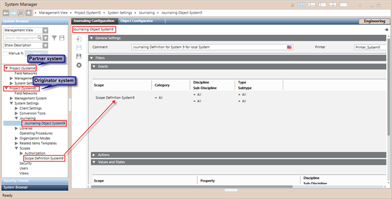

Additional Scopes Procedures
This section provides additional procedures for Desigo CC Scopes related tasks.
Prerequisites
- System Manager is in Engineering mode.
- System Browser is in Management View.
Configure Scopes from a Partner System in a Distributed Environment
- You have created and configured two active projects P1 on System A and P2 on System B in distribution and the distribution connection is bi-directional. For more information, see Configuring the Projects in Distribution.
- You are logged on to the Installed Client of the originator system, for example System A and from where you want to view and configure the Scope definition of another system, for example System B, which is in distribution with System A.
- Select Project (System B) > System Settings > Scopes, perform the following tasks:
- Configure the Scope Definition by configuring Scope Rules and/or configuring Scope Exceptions.
- To apply the Scope Definition as filter in another application, drag the Scope Definition onto the application in the local system, in this case System B.
- You have configured the Scope Definition for the partner system, System B. (See Scopes in Distributed Systems)

Delete a Scope Definition or a Scope Folder
Deleting a Scope folder deletes all its children. You cannot delete the main Scopes folder.
- At least one Scope definition or a Scope folder is available under the Scopes root folder.
- Select Project > System Settings > Scopes > [scope definition] or [scope folder].
- Click Delete
 .
. - Click Yes.
- The Scope definition or subfolder is removed from System Browser.
Modify a Scope Definition
- A Scope definition is available in System Browser.
- Select Project > System Settings > Scopes > [scope definition].
- Scopes displays.
- To replace a row, do the following:
a. Drag a system object from the System Browser tree onto a row in Scope Rules or Scope Exceptions that you want to replace.
b. Select Replace. - The new row appears having the hierarchical path of the dragged system object.
- To remove a row, do the following:
a. Select a row from the Scope Rules/Scope Exceptions section that you want to delete.
b. Click Remove Row. - The selected row is deleted.
NOTE: By clicking Remove Row, you can also delete an invalid row (shown in red) containing an unknown object. - To remove all invalid rows, do the following:
- Click Remove All Invalid Entries .
NOTE: This is enabled only when there is at least one invalid entry in the selected Scope definition. - The invalid entries are removed.
- Click Save
 .
. - Click Yes.
- The configuration changes are saved.

NOTE:
You need to reboot the management station (in closed mode) if you modify a Scope Rights configuration (for an existing/new Scope definition) associated with a user group to enable these changes.